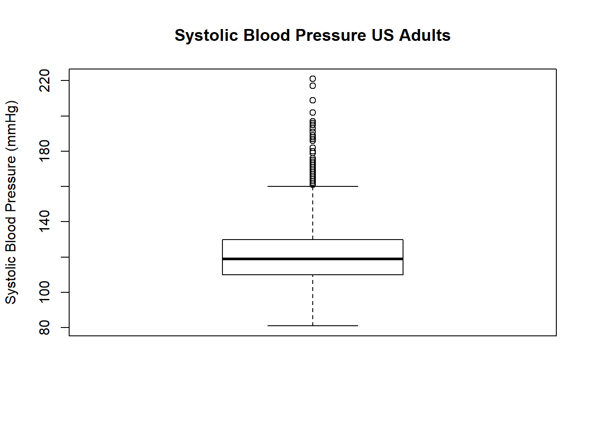
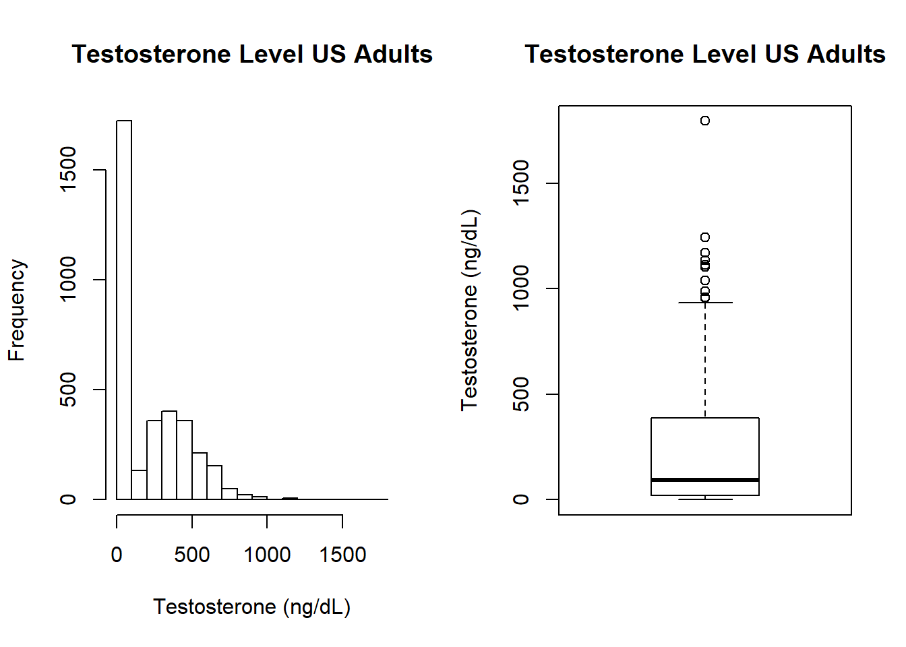
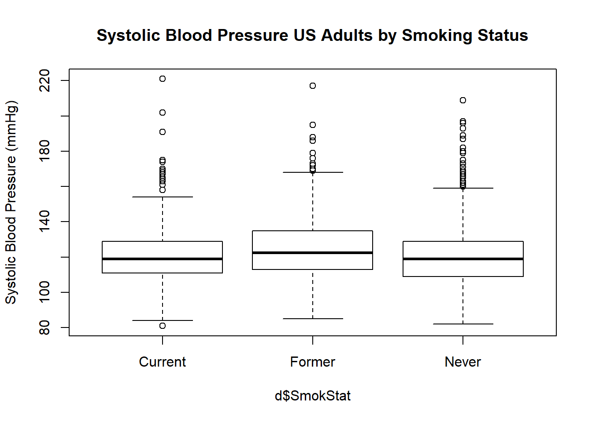
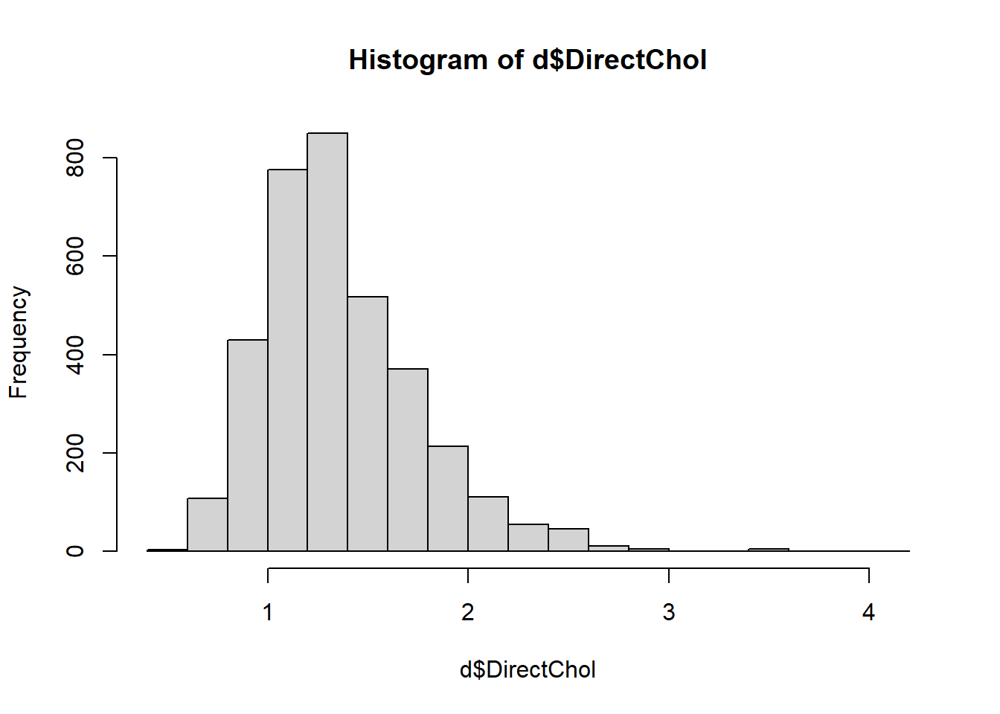
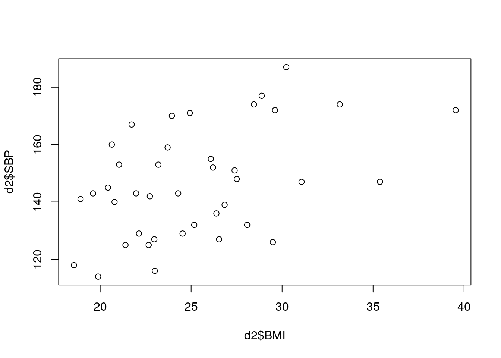

In this computer lab, you will learn how to describe a sample using graphs and descriptive statistics. We concentrate here on continuous outcome variables, looking at one group, two or more groups, and the relation between a continuous outcome variable and a continuous explanatory variable (determinant).
In a later COO you will learn how to describe a categorical variable, and associations between two categorical variables.
You are asked to answer a number of questions (in bold and numbered throughout).
For the following exercises, we will use two datasets: an SPSS dataset (BMISBP.sav), which you need to download and save locally, and a built-in dataset. The latter is a subset of the National Health and Nutrition Examination Survey (NHANES). The dataset is available in the NHANES package, and the data frame is also called NHANES. The first time you use the package, you will need to install it (either via the RStudio menu: Tools-Install Packages, or with the command install.packages('NHANES')). Then load the package (this you need to do every time you restart R/Rstudio), read in the dataframe, and get some information on the dataframe:
library(NHANES)
data(NHANES)
## help("NHANES")Question 1. What type of study design is this?
We’ll use the function dim() (dimensions) to see how many people are in the dataset provided, and how many variables.
dim(NHANES)## [1] 10000 76The dataset contains 76 variables from 10000 participants. To keep things simple, we will concentrate on only the second survey (2011-2012), and use only the adults in the sample. Make a new dataframe d, containing this selection:
d <- data.frame(NHANES[NHANES$SurveyYr=="2011_12" & NHANES$Age>=18,])
dim(d)## [1] 3707 76So we continue with the 3707 adult participants.
We will start by looking at systolic blood pressure of adults in the sample.
Make a histogram and boxplot of systolic blood pressure (SBP):
hist(d$BPSysAve, main="Systolic Blood Pressure US Adults",
xlab="Systolic Blood Pressure (mmHg)")boxplot(d$BPSysAve, main="Systolic Blood Pressure US Adults",
ylab="Systolic Blood Pressure (mmHg)")
Question 2. Describe the shape of the distribution of SBP. Which descriptive statistics would you prefer for the location and variation (spread)?
Before continuing, see if you can read off the median SBP in the sample. What are the first and third quartiles, and what is the interquartile range? Can you guess (approximately) what the mean will be? And the standard deviation?
Now we’ll check our guesses. You’ve seen several of the functions (mean, median, sd) earlier. IQR() is the interquartile range. Do you understand the quantile function? If not, try help("quantile").
median(d$BPSysAve, na.rm = TRUE)## [1] 119mean(d$BPSysAve, na.rm = TRUE)## [1] 121.458quantile(d$BPSysAve, probs=c(0.25,0.75), na.rm=TRUE)## 25% 75%
## 110 130IQR(d$BPSysAve, na.rm = TRUE)## [1] 20sd(d$BPSysAve, na.rm = TRUE)## [1] 17.1919How do your guesses compare to the estimates above?
Getting all those statistics took a lot of lines of code. Fortunately, someone wrote a nice function to get all the important descriptive statistics for a variable, either for everyone in the dataset, or stratified (split up) by a factor (grouping) variable. If you haven’t already used it, you’ll have to first install the psych package. The function we want is describe. Note that we use the skew=FALSE option to repress some of the default output, and the quant and IQR options to get some output we do want.
library(psych)
describe(d$BPSysAve, na.rm=TRUE, skew=FALSE, quant=c(0.25, 0.5, 0.75), IQR=TRUE)## vars n mean sd min max range se IQR Q0.25 Q0.5 Q0.75
## 1 1 3583 121.46 17.19 81 221 140 0.29 20 110 119 130Let’s now take a look at the distribution of testosterone in the sample.
hist(d$Testosterone, main="Testosterone Level US Adults",
xlab="Testosterone (ng/dL)")
boxplot(d$Testosterone, main="Testosterone Level US Adults",
ylab="Testosterone (ng/dL)")
Question 3. Describe what you see here. Can you explain the strange distribution? What have we done wrong? How could we fix the problem?
Let’s compare smokers, non-smokers and former smokers on a few variables. Since the variable SmokeNow was only asked of people who had ever smoked more than 100 cigarettes (Smoke100), we will first need to create a new variable. (Note: there are many ways to create new variables in R, this is one way.)
d$SmokStat[d$Smoke100 == "No"] <- "Never"
d$SmokStat[d$Smoke100 == "Yes" & d$SmokeNow == "No"] <- "Former"
d$SmokStat[d$Smoke100 == "Yes" & d$SmokeNow == "Yes"] <- "Current"When you’ve created a new variable from existing variables, always take a moment to check that the coding worked!
table(d$Smoke100, useNA = "always")
table(d$SmokStat, useNA = "always")
table(d$Smoke100,d$SmokeNow,d$SmokStat, useNA = "always")There were 2027 people who never smoked more than 100 cigarettes, and 1560 who did. Of those, 698 answer yes to SmokeNow, and 862 say no. 120 people did not respond to the question about ever smoking, and those are missing all 3 smoking variables. Can you identify all those numbers from the above tables?
Now let’s compare these three groups on a blood pressure. Does smoking increase your systolic blood pressure (SBP)? Do former smokers have higher SBP than non-smokers? Examine the relation between smoking status and the average of several systolic blood pressure readings (BPSysAve), first with side-by-side boxplots.
boxplot(d$BPSysAve~d$SmokStat,
main="Systolic Blood Pressure US Adults by Smoking Status",
ylab="Systolic Blood Pressure (mmHg)")
What is the shape of the distribution for each of the groups? Let’s get the descriptive statistics for the three groups. We’ll start by using base R functions. First we’ll get means for each group using selections:
mean(d[d$SmokStat=="Never", c("BPSysAve")], na.rm = TRUE)## [1] 120.1813mean(d[d$SmokStat=="Former", c("BPSysAve")], na.rm = TRUE)## [1] 125.2447mean(d[d$SmokStat=="Current", c("BPSysAve")], na.rm = TRUE)## [1] 121.7299Okay, that’s going to take too long! Let’s use the tapply function for the median, SD and IQR:
tapply(d$BPSysAve,d$SmokStat,median,na.rm=TRUE)## Current Former Never
## 119.0 122.5 119.0tapply(d$BPSysAve,d$SmokStat,sd,na.rm=TRUE)## Current Former Never
## 17.94236 17.95815 16.51434tapply(d$BPSysAve,d$SmokStat,IQR,na.rm=TRUE)## Current Former Never
## 18 22 20We can get descriptive statistics split up by a grouping variable even faster by using the describeBy function from the psych package. We use the same options here as above with the describe function.
describeBy(d$BPSysAve, group=d$SmokStat, na.rm=TRUE, skew=FALSE, quant=c(0.25, 0.5, 0.75), IQR=TRUE)##
## Descriptive statistics by group
## group: Current
## vars n mean sd min max range se IQR Q0.25 Q0.5 Q0.75
## 1 1 670 121.73 17.94 81 221 140 0.69 18 111 119 129
## ------------------------------------------------------------------------------
## group: Former
## vars n mean sd min max range se IQR Q0.25 Q0.5 Q0.75
## 1 1 846 125.24 17.96 85 217 132 0.62 22 113 122.5 135
## ------------------------------------------------------------------------------
## group: Never
## vars n mean sd min max range se IQR Q0.25 Q0.5 Q0.75
## 1 1 1953 120.18 16.51 82 209 127 0.37 20 109 119 129In this way, we get all the usual descriptive statitics for SBP for each of the groups separately.
Earlier in the course you read about transformations of variables. In the NHANES dataset, HDL cholesterol was reported in mmol/L. This is the SI unit, and also the unit used to report HDL cholesterol in many countries, including the Netherlands. In the US, however, the standard units are mg/dL. The conversion factor from mmol/L to mg/dL is 38.61004. Given the following descriptive statistics for HDL cholesterol in mmol/L, can you translate the mean, median, standard deviation and IQR to mg/dL for an American physician?
## vars n mean sd min max range se IQR Q0.25 Q0.5 Q0.75
## 1 1 3500 5 1.06 1.53 12.28 10.75 0.02 1.4 4.24 4.91 5.64Now let’s check our answers by making a new variable, and getting the descriptive statistics for this new variable:
d$TotCholmgdl <- d$TotChol*38.61004
describe(d$TotCholmgdl, na.rm=TRUE, skew=FALSE, quant=c(0.25, 0.5, 0.75), IQR=TRUE)## vars n mean sd min max range se IQR Q0.25 Q0.5 Q0.75
## 1 1 3500 193.01 40.79 59.07 474.13 415.06 0.69 54.05 163.71 189.58 217.76Since all of the statistics we’re examining (mean, median, sd, IQR) are in the same units as the variable itself, we can multiply the descriptive statistics of TotChol to get the descriptive statistics of TotCholmgdl. Though of course making the new variable and asking for its descriptives is easier.
We also learned that certain transformations can help us with skewed variables. Consider, again, HDL cholesterol. Now we’ll look at direct HDL cholesterol, stored in the variable DirectChol.
hist(d$DirectChol)
As with many other lab/physical measures variables we’ve looked at, this variable is also right-skewed. Later in the course we’ll hear more about why, but often it is useful in statitics to have (more or less) normally distributed outcome variables. A common transformation in biomedical statistics is the log transformation. When statisticians say “log transformation”, we nearly always mean the “natural log transformation” (ln), but log10, log2 or any other base will work as well. Which base you use will sometimes depend on the context of the study. However, if there is no obvious reason to choose a different base, you’ll generally see ln used (i.e. base e=2.718). That is the transformation we’ll use here.
d$lnDirChol <- log(d$DirectChol)
## hist(d$lnDirChol)Question 4. Describe the distribution of lnDirChol. What has changed after log transformation?
Do heavier people tend to have higher blood pressure? We will examine the relation between BMI (a continuous, numeric variable) and SBP (also a continuous, numeric variable). Though these particular variables are also available in the NHANES dataset, it might be instructive to consider a smaller sample. Often in biomedical research we do not have data from thousands of individuals at once. The file BMISBP.sav contains a sample of 40 elderly Dutch adults. Read in the data (you may need to re-install the foreign package) and examine the first few lines of the data frame. Also make sure you change your path name to the directory in which you have saved the file!
library(foreign)
d2 <- read.spss(file.path(mypath, "BMISBP.sav"), to.data.frame = T, use.value.labels = F)
dim(d2)## [1] 40 2head(d2)## BMI SBP
## 1 18.560 118
## 2 18.922 141
## 3 19.611 143
## 4 19.890 114
## 5 20.430 145
## 6 20.640 160You have alread seen how to generate scatterplots. For a quick-and-dirty examination of 2 variables at a time, the plot function in base R is generally sufficient (though much prettier plots can be made using the ggplot2 package).
plot(d2$BMI, d2$SBP)
How would you characterize the relation between BMI and SPB? How strong do you think the correlation is?
Now let’s check our guess for the correlation. Note that we need to use an option that tells R what to do with missing values in either variable. With only two variables, you can use the option use="complete.obs". However, if you want to look at several variables at once (in a “correlation matrix”), we would prefer to only delete the records that are missing for the two variables being examined; for this reason we choose use="pairwise.complete.obs":
cor(d2$BMI, d2$SBP, use="pairwise.complete.obs")## [1] 0.4519469Question 5. How does this compare to your guess? Would you call this no, weak, moderate, strong or perfect correlation?
Now you will apply the skills you’ve learned to a new set of variables. We’ll return to the NHANES data, which should still be in the memory of R/Rstudio (if you’ve since closed RStudio and started a new session, you will need to re-run the code that read in NHANES and reduced it to the data frame d).
Examine the distributions of, and the associations among, the following variables: age in years, the 60-second pulse rate, the combined systolic blood pressure reading, and total HDL cholesterol.
Question 6. Describe the distributions of age, 60-second pulse rate, and total HDL cholesterol (we’ve already examined SBP in detail)
Question 7. For which variable(s) do you expect the mean and median to be the same? For which do they actually differ appreciably?
Question 8a. Examine visually and numerically the relations among age in years, pulse rate, SBP, and HDL cholesterol. (Hint: remember the scatterplotMatrix() function.) Question 8b. Which of the six associations has the strongest correlation, and what is the correlation coefficient for that association?
Question 8c. Which of the six associations has the weakest correlation, and what is that correlation coefficient?
Question 9a. Get side-by-side boxplots and the descriptive statistics for total HDL cholesterol, separately for the body mass index categories (categorized according to WHO guidelines; this is a variable in the dataset).
Question 9b. Describe the patterns you see.
Question 9c. Is there increasing total HDL cholesterol for increasing categories of BMI?